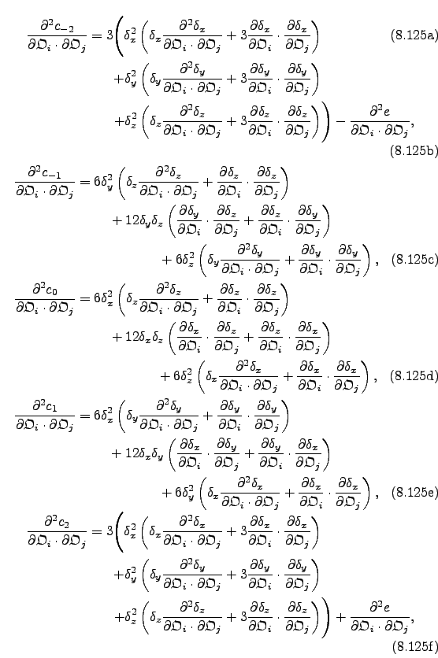
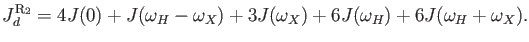

Next: Dispersion parameter optimisation Up: Relaxation dispersion optimisation theory Previous: The clustered relaxation dispersion Contents Index
One of the most statistically unbiased methods for determining an initial parameter estimate prior to optimisation is to perform a grid search.
This is performed via the minimise.grid_search user function (see Section 17.2.69 on page ![[*]](crossref.png) ).
).
For some dispersion models the grid search can be too computationally expensive. In this case, some tricks can be used to bypass the parts of the grid search or the whole grid search:
The grid search lower and upper bounds default to:
|  |
For the MMQ models, the grid bounds are slightly different with
|  |
These values can be changed when not using the auto-analysis. Linear constraints can decrease the number of grid points searched through.
The relax user manual (PDF), created 2015-10-15.